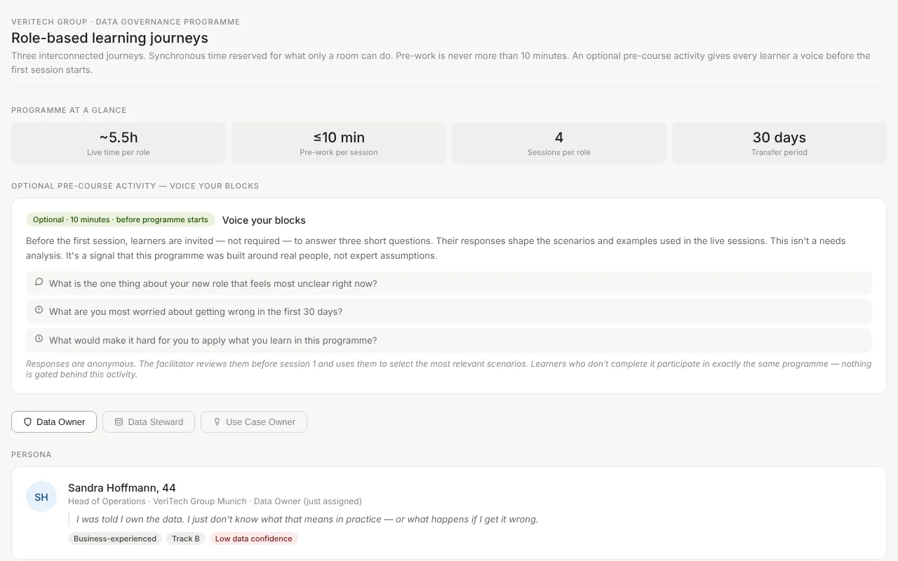
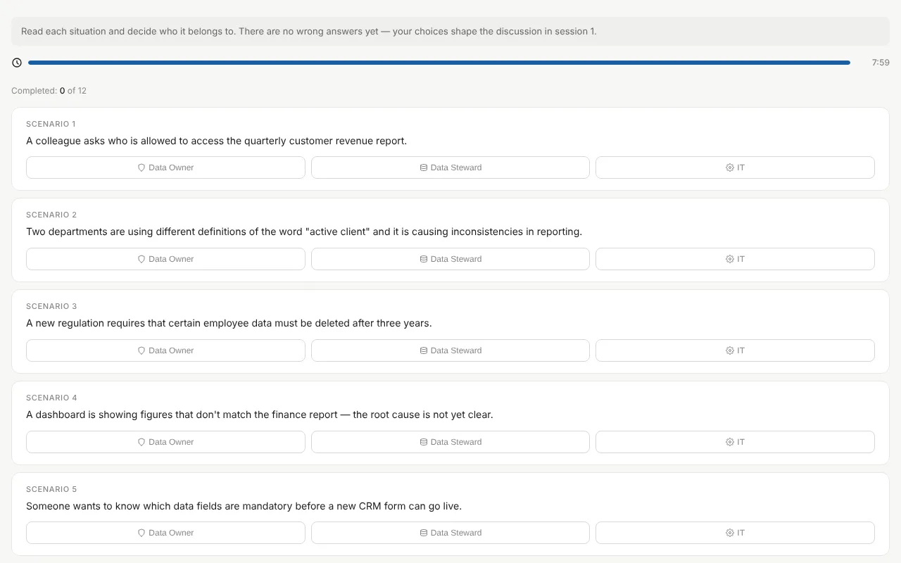
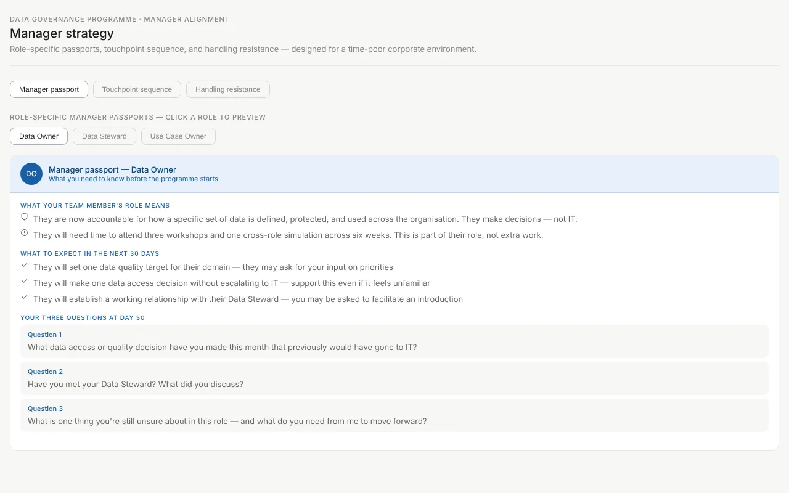
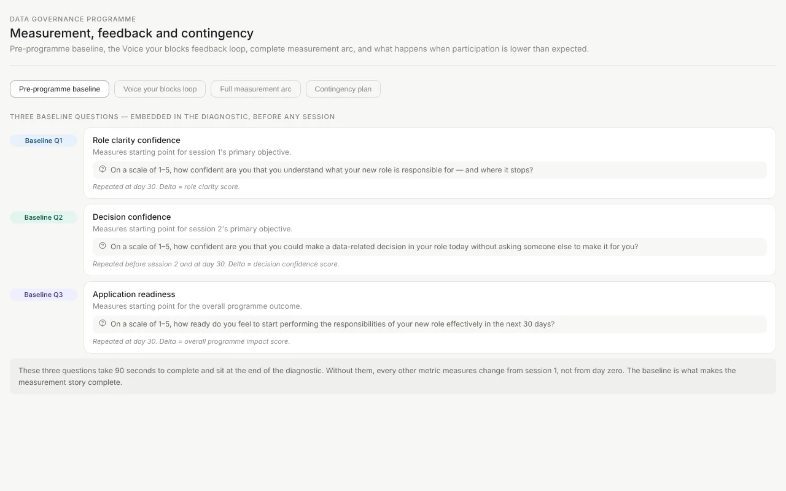
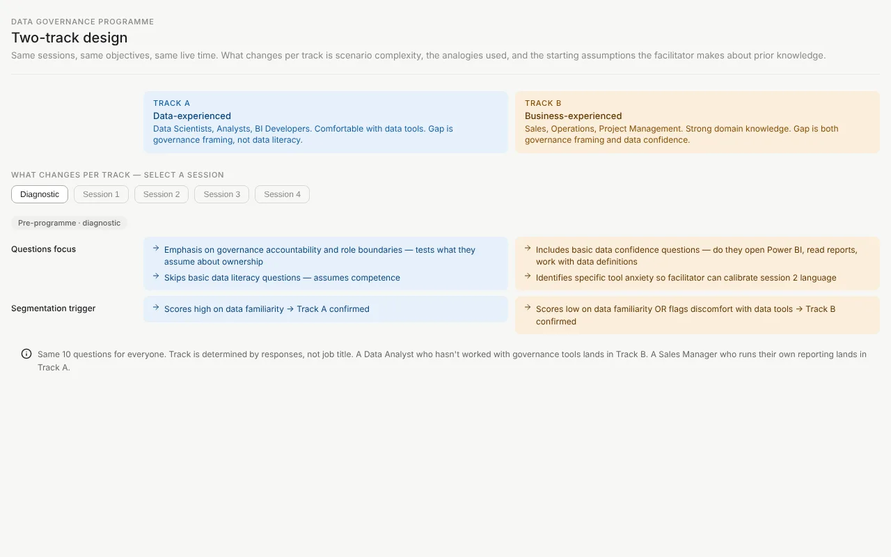
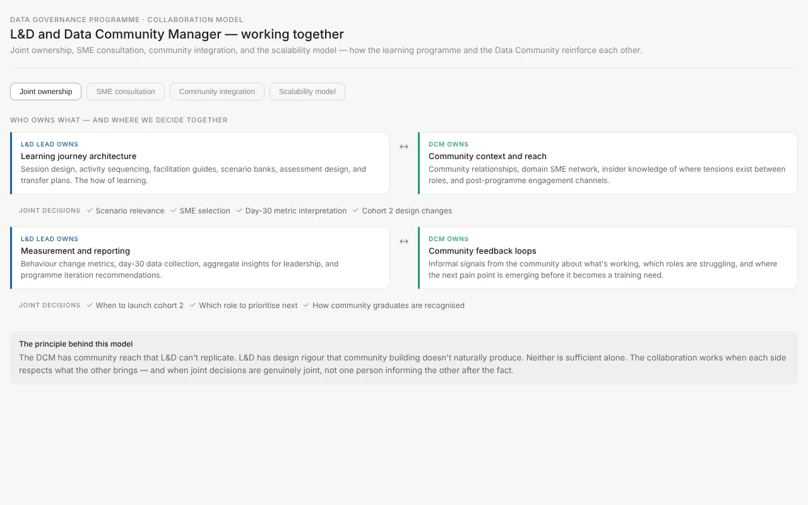

VeriTech Group data governance programme
Role-based learning for three new data roles, designed so people can make governance decisions in their first month — not just define them.

The programme at a glance: about 5.5 hours of live time per role, no more than 10 minutes of pre-work per session, four sessions and a 30-day transfer period.
The problem
VeriTech is rolling out data governance. Leadership has named people into three new roles and asked L&D for “governance training”.
When I looked closer, knowledge wasn't the main gap. People had the title but didn't know which decisions were now theirs, decisions still defaulted to IT, and new role-holders were worried about getting it wrong. A course on governance definitions wouldn't change any of that.
“I was told I own the data. I just don't know what that means in practice — or what happens if I get it wrong.”Sandra Hoffmann, Head of Operations and newly assigned Data Owner (persona)
How I approached it
- Separate the gapsSkill, confidence and environment gaps treated separately — each needs a different fix.
- Map the actionsThe handful of decisions each role faces in its first 30 days.
- Prototype earlyClickable artefacts that stakeholders can test before any session runs.
- Plan the measurementBaseline questions before day one and the same questions at day 30.
Key design decisions
Start with disagreement, not a lecture
Before session 1, each learner spends 8 minutes assigning 12 real situations to Data Owner, Data Steward or IT. There are no right answers yet. The session opens with the scenarios people disagreed on, which is exactly where role confusion lives.
Try the card sort
Give each role different information
In the cross-role simulation, each role gets its own brief with facts the others don't have. The only way to reach a decision is to ask and negotiate — the same skill the roles need in real governance meetings.
Open the simulation
Design for managers, not just learners
Behaviour changes only if managers expect it. Each manager gets a role-specific passport, five planned touchpoints and prepared answers to the four objections they're most likely to hear.
See the manager plan
Everything I built
Each artefact is a working page — open it and click through it as a learner or facilitator would.
- Learning journeysThree connected journeys, one per role, with personas and pre-work.
- Cross-role simulationRole briefs, hidden information and a facilitator guide.
- Card sortThe 8-minute pre-session activity with 12 scenarios.
- Measurement planBaseline, feedback loop, day-30 arc and contingency plan.

- Two-track deliveryWhat changes session by session for less data-confident learners.

- Manager alignmentManager passports, touchpoints and objection handling.
- Ownership and scalingHow L&D and the data community share ownership, from pilot to global.

Results and next steps
This is a concept project for a fictional client — fully designed, not yet delivered. These are the measures built into the design, so a real pilot would produce evidence from day one.
How I'll measure it
- Role clarity: “How confident are you that you understand what your new role is responsible for?” (1–5)
- Decision confidence: “How confident are you that you could make a data decision without asking someone else?” (1–5)
- Application readiness: “How ready do you feel to carry out your new role in the next 30 days?” (1–5)
- All three asked before session 1 and again at day 30
What success looks like
- Data Owners make decisions instead of passing them to IT
- Data Stewards resolve conflicting data definitions
- Use Case Owners submit briefs technical teams can act on
- If participation drops below the agreed threshold, a planned contingency kicks in